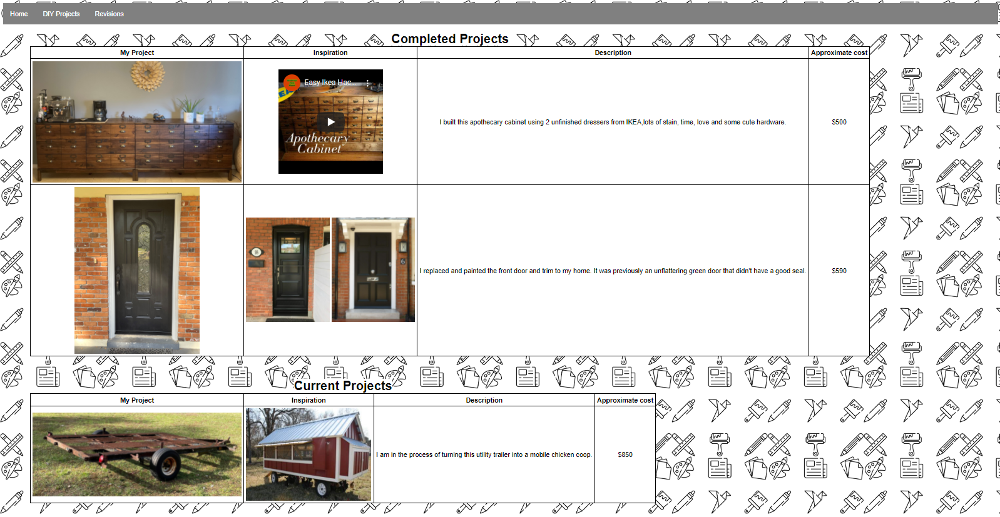
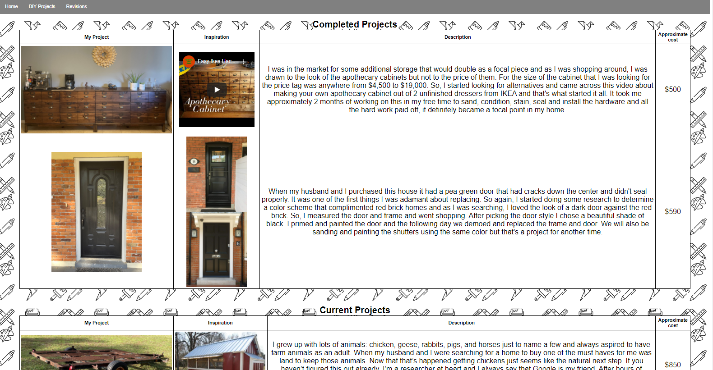

Revisions
After requesting some feedback on my site from some co-workers and family these are the revisions that I made based on that feedback.
-
The first revisions I made were to the homepage, a co-worker made note that the main header looked bulky and the background color of the "about me" and paragraphs of the home page took up the length of the page. So I made the header more compact and adjusted the background color to only span the length of the word and not across the entire page.

-
The next revision I made was to the project page. The feedback I received was that all the extra space around the images made the site look clunky. I realigned the table to reduce that excess space and imcreased the size of the table header to make it more readable.
 -

The third revision I made was also to the homepage. The notes that I received were to